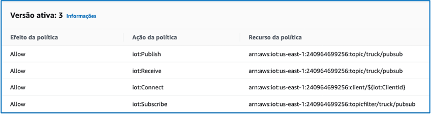

Actividade 3
EXECUTAR UN EXEMPLO DA DEVICE SDK V2.
Obxectivo
O obxectivo desta actividade é probar un dos exemplos que veñen coa versión 2 do Device SDK e comparar os scripts cos que vimos na actividade 1.
- O exemplo que vamos a probar intercambia (publica e recibe) mensaxes co servizo AWS IoT Core de maneira segura usando MQTT5.
Nota
Podes ver aquí a documentación do exemplo.
Pasos
Fai o seguinte:
- Desde un terminal no ambiente Cloud9 instala o Device SDK v2 para Python.
- Clona o repositorio en
~/environment/scripts
$ cd ~/environment/scripts
$ git clone -b v1.22.0 \
https://github.com/aws/aws-iot-device-sdk-python-v2.git \
--recursive
- Corrixe a versión no ficheiro
__init__.pye instala o Device SDK
$ sed -i "s/__version__ = '1.0.0-dev'/__version__ = '1.22.0'/" \
./aws-iot-device-sdk-python-v2/awsiot/__init__.py
$ python3 -m pip install ./aws-iot-device-sdk-python-v2
...
Installing collected packages: awsiotsdk
Running setup.py install for awsiotsdk ... done
Successfully installed awsiotsdk-1.22.0
$
- Para poder usar MQTT5 precisamos conectarnos a un endpoint de AWS IoT que acepte certificados recoñecidos pola entidade certificadora de Amazon (ATS, Amazon Trust Services). Descarga o certificado raíz de ATS no directorio certs.
$ cd ~/environment/certs
$ curl https://www.amazontrust.com/repository/AmazonRootCA1.pem > root-CA1.crt
Nota
Consulta aquí o motivo polo que é preciso facer este paso.
- No directorio de scripts, crea un script start_v2.sh para executar o exemplo.
Nomenclatura
Lembra usar o teu prefixo no nome da cousa.
$ cd ~/environment/scripts
$ nano start_v2.sh
$ cat start_v2.sh
#!/usr/bin/env bash
# stop script on error
set -e
# set the device name
device=xcpm2425-truckSensor01
# get the MQTT5-compatible AWS IoT endpoint
aws iot describe-endpoint \
--endpoint-type iot:Data-ATS > /tmp/iotendpoint.json
iot_endpoint=$(jq -r ".endpointAddress" /tmp/iotendpoint.json)
# run MQTT5 pub/sub sample app
printf "\nRunning MQTT5 pub/sub sample application...\n"
python3 ./aws-iot-device-sdk-python-v2/samples/mqtt5_pubsub.py \
--endpoint $iot_endpoint --ca_file ../certs/root-CA1.crt \
--cert ../certs/$device.cert.pem --key ../certs/$device.private.key \
--topic truck/pubsub --count 0
$
Nota
Para poder usar MQTT5 obtemos un endpoint compatíbel usando o parámetro --endpoint-type iot:Data-ATS no comando describe-endpoint e lle pasamos ao script mqtt5_pubsub.py o certificado raíz do ATS no parámetro –-ca_file.
- Edita a política AWS IoT da cousa para permitir a subscrición ao tópico do exemplo e publicar e recibir mensaxes del.
OLLO
Lembra usar o ID da túa conta nos ARN (Amazon Resource Name) dos recursos.
 Imaxe: política AWS IoT modificada.
- Executa o exemplo no directorio de scripts.
$ pwd
/home/ec2-user/environment/scripts
$ chmod +x start_v2.sh
$ ./start_v2.sh
- No cliente MQTT da consola de AWS IoT subscríbete ao tópico
truck/pubsube comproba que se reciben mensaxes. Podes tamén probar a publicar mensaxes no mesmo tópico e comprobar se aparecen no terminal no que se estea a executar o script start_v2. Para parar o script premeCtrl+Cno terminal.
Importante
Antes de continuar xa podes tomar as capturas que se piden para xustificar a actividade. Os seguintes pasos non é preciso xustificalos.
- Abre o script mqtt5_pubsub.py no directorio
samplesdo Device SDK v2 e analiza o seu código. Compárao co da actividade 1. Presta atención en especial a:
- Como se importan as compoñentes de MQTT5.
- Como se crea un cliente MQTT5.
- Como se abre e pecha unha conexión co cliente MQTT5.
- Como se realiza unha subscrición a un tópico MQTT5 e como se anula.
- Como se publican e reciben mensaxes co cliente MQTT5.
- Este paso é opcional. O script pubsub.py no directorio
samplesdo Device SDK v2 é unha implementación do mesmo exemplo que acabamos de ver pero usando MQTT311. Modifica o script start_v2.sh para executar este exemplo. Debería funcionar tanto co endpoint e certificado de ATS como cos que se usaron no curso.
Xustificación da actividade
Toma as seguintes capturas para a memoria de xustificación da práctica:
- Ambiente Cloud9 co Device SDK v2 instalado e o código do script start_v2.sh aberto nun terminal.
- Propiedades da política AWS IoT modificada.
- Ambiente Cloud9 coa saída do terminal na que se executou o exemplo.
- Consola IoT coas mensaxes MQTT recibidas nas que poida verse o payload.
Importante
As capturas teñen que asemellarse ás que se tomaron nas seccións 10 e 11 do curso de AWS Skill Builder. As capturas tomadas na consola AWS teñen que incluír o menú superior no que poida verse o nome de usuario da conta.